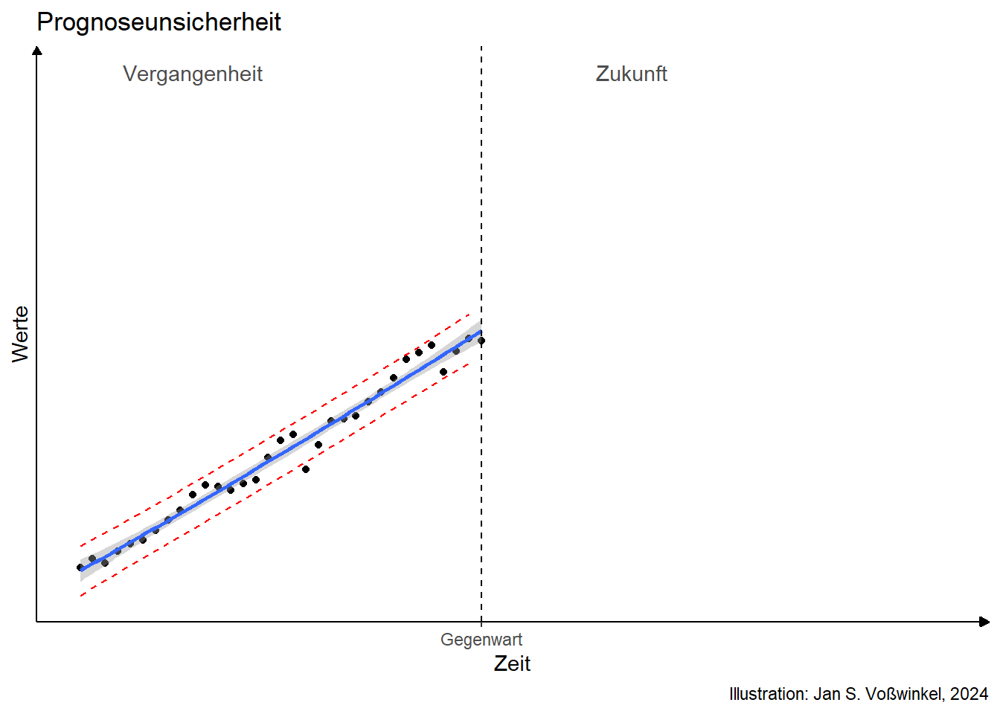
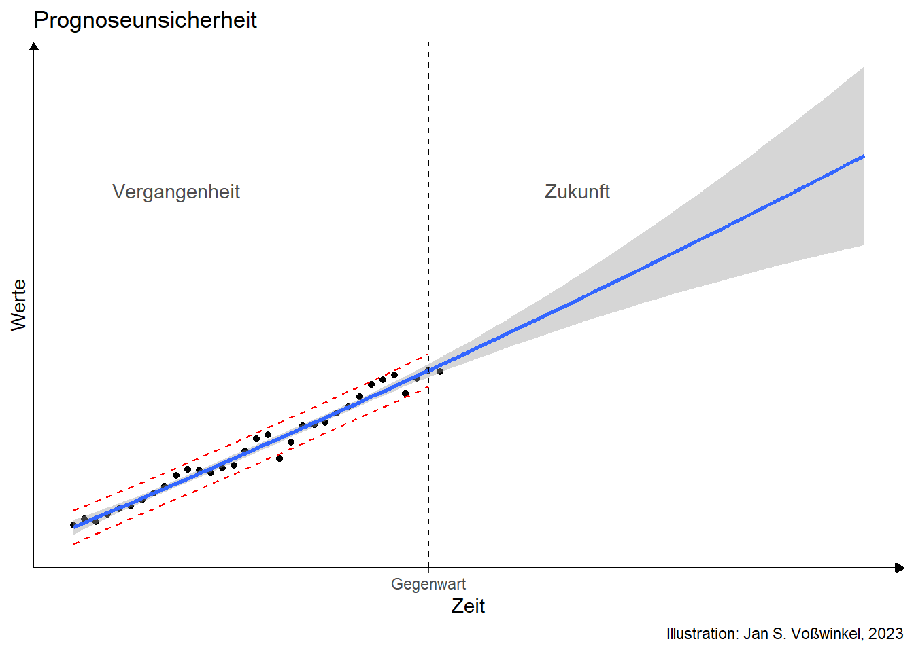
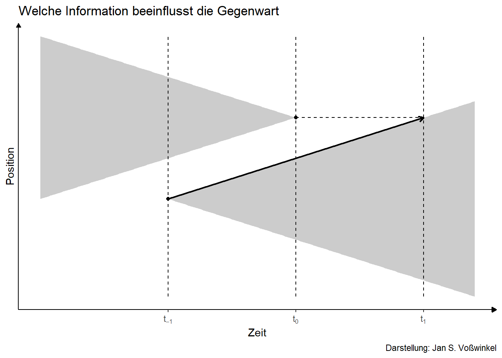
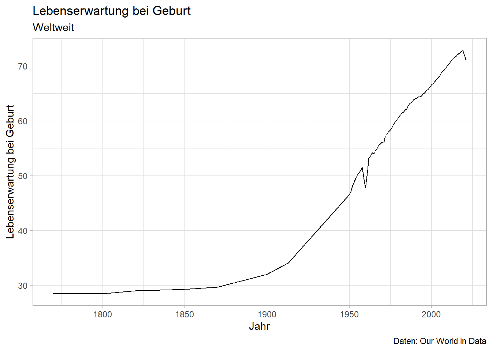
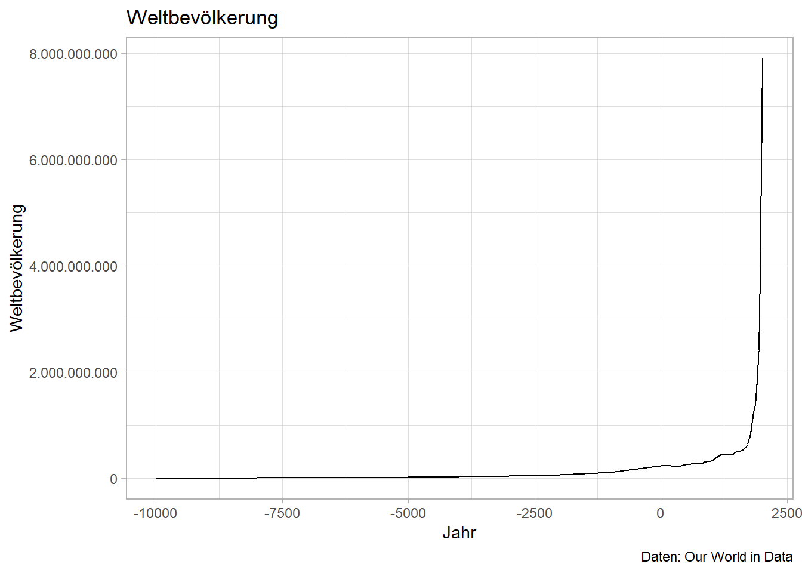
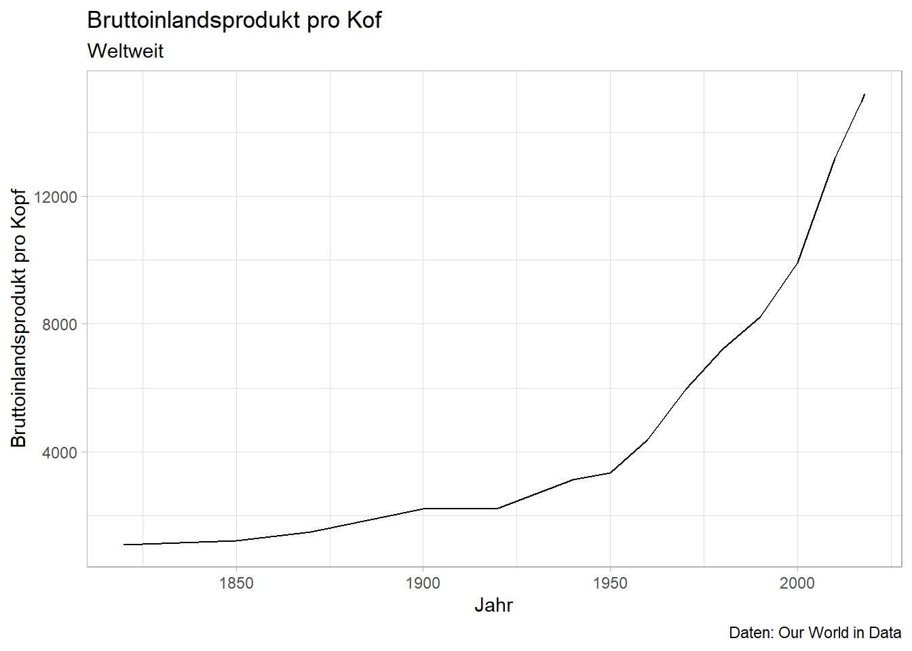
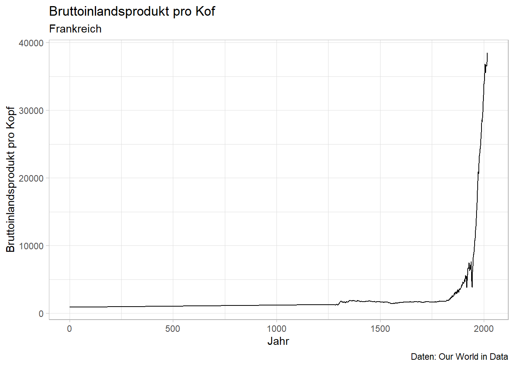
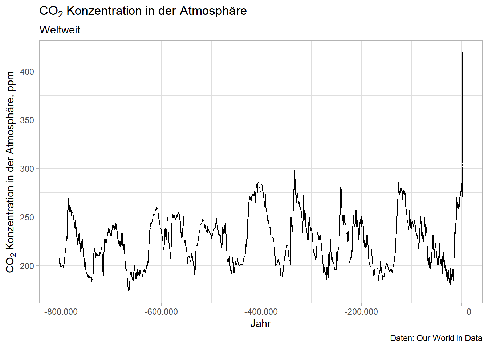
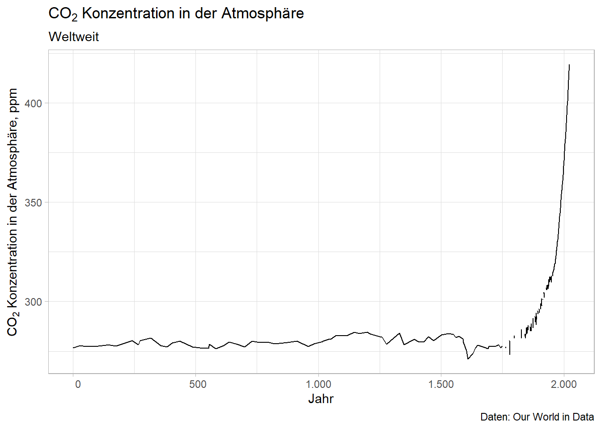
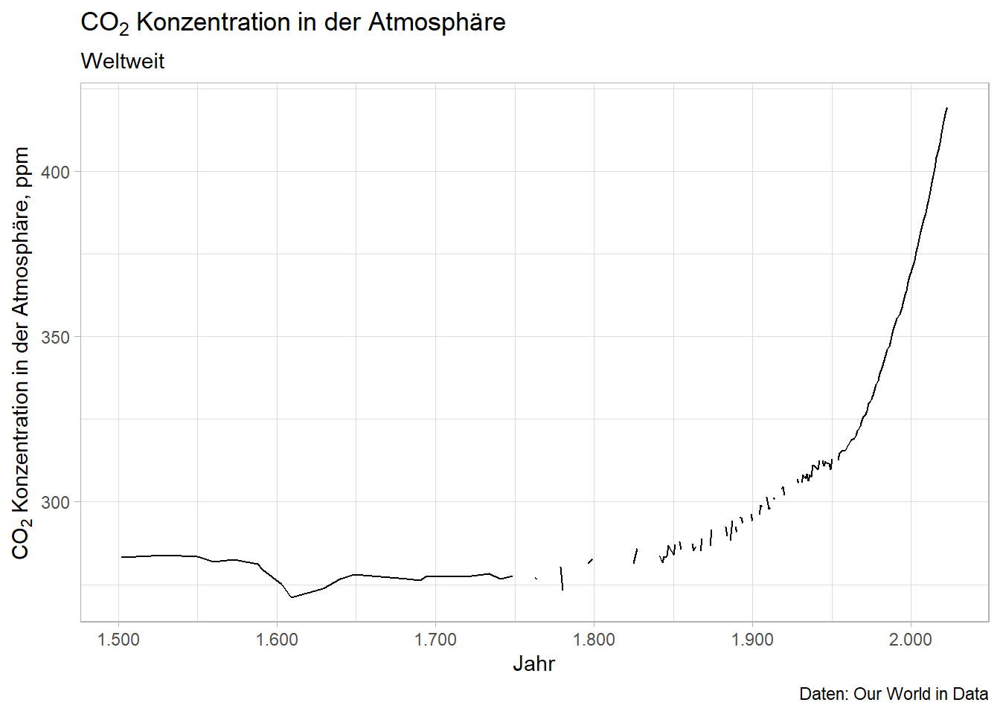

2 Zukunft
Niemand hat je die Zukunft gesehen
aber alle erwarten, dass es sie gibt
\(\rightarrow\) Sie rechnen damit, heute nach Hause zu kommen, oder?
2.1 Begriff
Zukunft bezeichnet noch kommende zeitliche Perioden
Zeit ordnet Perioden in eine Reihenfolge
Einzelne Perioden hängen zusammen
Zukunft ist aber nicht völlig determiniert
2.2 Vergangenheit, Gegenwart und Zukunft
Die Vergangenheit war einmal eine/die Zukunft
Blick in die Vergangenheit offenbart, wie Vergangenheit, Gegenwart und Zukunft zusammenhingen
Arbeitshypothese: Vielleicht besteht dieser Zusammenhang fort
- Beobachtungen der Vergangenheit
- Regelmäßiger Prozess
- Erkennbarer Trend

- Wie geht es weiter?

2.3 Unterschiedliche Modelle zeitlicher Verläufe
2.3.1 Zukunft hängt von der Gegenwart ab
- \(x_t=f(x_{t-1})+e_t\)
2.3.2 Zukunft hängt nur von der Zeit ab
- \(x_t=\beta_0+ f(t)+e_t\)
\(\rightarrow\) Ansatzpunkte zur Gestaltung der Zukunft:
Der funktionale Zusammenhang \(f(\cdot)\)
Die Gegenwart
Nicht: Der Störterm
2.3.3 Zwischenfazit
Die Zukunft ist ungewiss
Selbst bei Fortschreibung der Gegenwart hohe Unsicherheit in fernerer Zukunft
Noch höhere Unsicherheit bei Strukturbrüchen
Zukunft hängt ab von
- eigenen Entscheidungen und
- Entscheidungen anderer
\(\rightarrow\) Ökonomische Analyse sozialer Phänomene
2.3.4 Teile der Zukunft sind bereits vergangen

\(\rightarrow\) Teile der Zukunft sind nicht mehr änderbar
2.4 Prognose und Freiheit
Passen Vorhersehbarkeit und Willensfreiheit zusammen?
Individuelles Verhalten ist oft je nach Situation gut vorhersehbar (z.B. Straßenverkehr)
Soziale Phänomene hängen oft nicht stark von individuellem Verhalten ab sondern vom Zusammenspiel vieler Entscheidungen (manchmal geben aber auch Individuen den Ausschlag)
2.5 Zur Planbarkeit sozialer Phänomene
Die Zukunft ist (in Teilen) gestaltbar
Gestaltbarkeit aber nicht beliebig: Gesellschaftliche Prozesse lassen sich nicht beliebig formen
2.6 Revolution vs Reform
Revolution bedeutet das Verlassen des Rahmens, für den man (einigermaßen) verstanden hat.
Reformen bedeuten, dass man innerhalb eines gegebenen Rahmens Veränderungen vornimmt.
2.7 Welche Zukunftsherausforderungen lassen sich erahnen?
2.7.1 Klimawandel, Klimaschutz- und -anpassungspolitik
2.7.2 Technischer Fortschritt: Digitalisierung, künstliche Intelligenz
2.7.3 Migration und Integration
2.7.4 Ökonomische und politische Polarisierung**
2.7.5 Demokratie und Menschenrechte
- \(\dots\)
3 Geschichte: Woher kommen wir?
3.1 Lebenserwartung

3.2 Bevölkerung

3.3 Wirtschaftskraft


3.4 THG-Emmissionen


